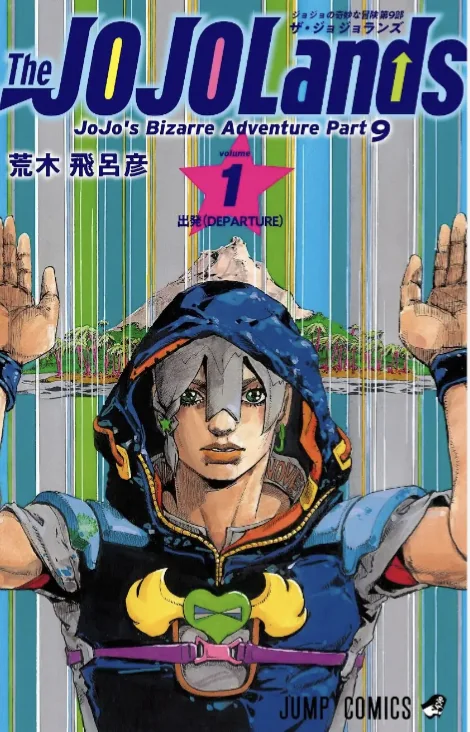
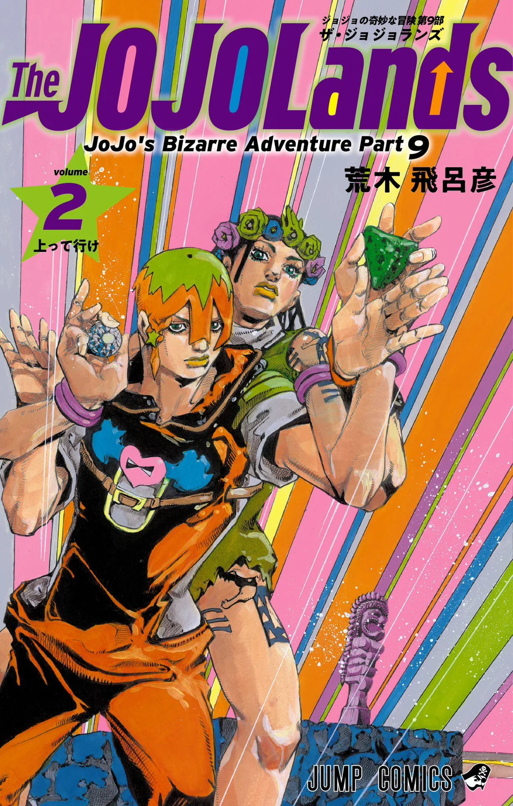

JoJolands is the ninth part of JoJo's Bizarre Adventure. It is being serialized in Weekly Shonen Jump from 2023 and is still ongoing. This part follows the advenures of Jodio Joestar who seeks to become incretably rich no matter the cost,as he dables in selling drugs and all sorts of illegal activities. The main conflict of this part stems from Jodio's adventure to becoming filthy Ritch as he claims.This story departs from the usual JoJo's narrative as the protagonist and those who he surrounds himself with have little to no morral and ethic values and are presented as barely compotent idiots trying to make a fortune from illegal activities like theft and trafficing.Unlike other parts at this point little is known about the final villain who Jodio must face ,however all evidence up to this point lead to this part being a true comming of age story unlike other parts where the protagonists already stard with a strong moral compass they follow.This leads to the conclusion that this part will finish the thematic narative of the last trilogy of JoJo's with this part being centered in childhood,as Jodio will mature into a person worthy of the JoJo title, however nothing can be certain .Up to this point the main metaphysical phenomenon of the part are the lava rocks that attract anything their holder deems of great worth and appear to be monopolized by the company HOWLER.As the unpredictable story continues more will be unraveled, however up to this point none can tell.


Comments